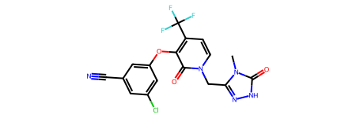
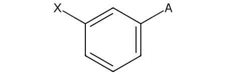
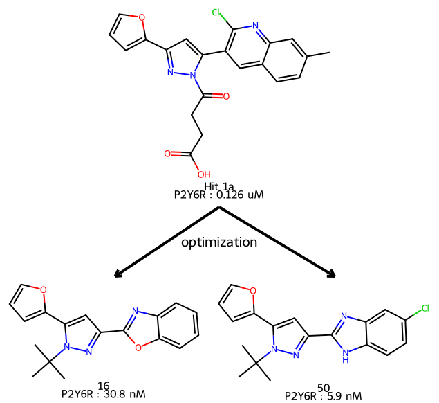

from rdkit import Chem
from rdkit.Chem.Draw import IPythonConsole
from rdkit.Chem import Draw
import rdkit
print(rdkit.__version__)2023.03.1May 3, 2023
The 2023.03 RDKit release contains the usual long list of enhancements and bug fixes. The list in the release notes is too long to cover in detail but, as usual, I wanted to do a post with a few things that I think are highlights.
from rdkit import Chem
from rdkit.Chem.Draw import IPythonConsole
from rdkit.Chem import Draw
import rdkit
print(rdkit.__version__)2023.03.1There used to be a bit of a dance required in order to calculate all of the 2D descriptors. We’ve cleared that up in this release by adding a single function Descriptors.CalcMolDescriptors() which does the work.
This is embarassingly simple to demonstrate:
doravirine = Chem.MolFromSmiles('Cn1c(n[nH]c1=O)Cn2ccc(c(c2=O)Oc3cc(cc(c3)Cl)C#N)C(F)(F)F')
doravirine
{'MaxAbsEStateIndex': 13.412553309006833,
'MaxEStateIndex': 13.412553309006833,
'MinAbsEStateIndex': 0.045220418860841605,
'MinEStateIndex': -4.871620672188628,
'qed': 0.6914051268589834,
'MolWt': 425.754,
'HeavyAtomMolWt': 414.66600000000005,
'ExactMolWt': 425.050251552,
'NumValenceElectrons': 150,
'NumRadicalElectrons': 0,
'MaxPartialCharge': 0.4197525104273902,
'MinPartialCharge': -0.45079941098947357,
'MaxAbsPartialCharge': 0.45079941098947357,
'MinAbsPartialCharge': 0.4197525104273902,
'FpDensityMorgan1': 1.3103448275862069,
'FpDensityMorgan2': 2.0344827586206895,
'FpDensityMorgan3': 2.6206896551724137,
'BCUT2D_MWHI': 35.495691906445956,
'BCUT2D_MWLOW': 10.182401353178228,
'BCUT2D_CHGHI': 2.363442602497932,
'BCUT2D_CHGLO': -2.1532454345808123,
'BCUT2D_LOGPHI': 2.362094239067197,
'BCUT2D_LOGPLOW': -2.2620565247489415,
'BCUT2D_MRHI': 6.30376236817795,
'BCUT2D_MRLOW': -0.13831572005086737,
'AvgIpc': 2.951845570725043,
'BalabanJ': 2.1143058157682066,
'BertzCT': 1236.821427505276,
'Chi0': 21.344570503761737,
'Chi0n': 14.619315272563007,
'Chi0v': 15.375244218581463,
'Chi1': 13.595574016164479,
'Chi1n': 7.8933192308003095,
'Chi1v': 8.271283703809537,
'Chi2n': 5.882827756329733,
'Chi2v': 6.319263536801718,
'Chi3n': 3.9307609940961763,
'Chi3v': 4.148978884332168,
'Chi4n': 2.4772835642835087,
'Chi4v': 2.7023697348309867,
'HallKierAlpha': -3.519999999999999,
'Ipc': 2291995.915536308,
'Kappa1': 20.220355828454835,
'Kappa2': 7.4789147435283585,
'Kappa3': 4.168020338062062,
'LabuteASA': 164.8909024413842,
'PEOE_VSA1': 9.303962601591405,
'PEOE_VSA10': 11.3129633249809,
'PEOE_VSA11': 5.824404497999927,
'PEOE_VSA12': 5.749511833283905,
'PEOE_VSA13': 5.559266895052007,
'PEOE_VSA14': 11.86604191564695,
'PEOE_VSA2': 9.361636831863176,
'PEOE_VSA3': 9.893218992372859,
'PEOE_VSA4': 23.531818506063985,
'PEOE_VSA5': 0.0,
'PEOE_VSA6': 11.600939890232516,
'PEOE_VSA7': 24.26546827384644,
'PEOE_VSA8': 18.267148868031594,
'PEOE_VSA9': 18.177429210401844,
'SMR_VSA1': 17.908108096824506,
'SMR_VSA10': 11.600939890232516,
'SMR_VSA2': 5.261891554738487,
'SMR_VSA3': 19.331562912184786,
'SMR_VSA4': 7.04767198267719,
'SMR_VSA5': 12.72105492335605,
'SMR_VSA6': 0.0,
'SMR_VSA7': 73.27433730199388,
'SMR_VSA8': 0.0,
'SMR_VSA9': 17.568244979360085,
'SlogP_VSA1': 15.98587324705553,
'SlogP_VSA10': 13.171245143024459,
'SlogP_VSA11': 11.49902366656781,
'SlogP_VSA12': 11.600939890232516,
'SlogP_VSA2': 19.331562912184786,
'SlogP_VSA3': 19.76872690603324,
'SlogP_VSA4': 11.33111286753076,
'SlogP_VSA5': 16.95130748139392,
'SlogP_VSA6': 40.05138621360316,
'SlogP_VSA7': 5.022633313741326,
'SlogP_VSA8': 0.0,
'SlogP_VSA9': 0.0,
'TPSA': 105.70000000000002,
'EState_VSA1': 28.738272135679853,
'EState_VSA10': 22.760319511168106,
'EState_VSA11': 0.0,
'EState_VSA2': 28.704757542634727,
'EState_VSA3': 6.06636706846161,
'EState_VSA4': 21.397409935657397,
'EState_VSA5': 19.18040611960041,
'EState_VSA6': 6.069221312792274,
'EState_VSA7': 0.0,
'EState_VSA8': 10.197363616602075,
'EState_VSA9': 21.599694398771053,
'VSA_EState1': 47.48050639865553,
'VSA_EState10': 5.842061004535676,
'VSA_EState2': 24.16343117595945,
'VSA_EState3': 14.921853617262808,
'VSA_EState4': -2.8980189732872814,
'VSA_EState5': -1.0781549918202147,
'VSA_EState6': 6.092225491490601,
'VSA_EState7': -3.945179835565914,
'VSA_EState8': -0.2762282865821226,
'VSA_EState9': 1.3919488437959202,
'FractionCSP3': 0.17647058823529413,
'HeavyAtomCount': 29,
'NHOHCount': 1,
'NOCount': 8,
'NumAliphaticCarbocycles': 0,
'NumAliphaticHeterocycles': 0,
'NumAliphaticRings': 0,
'NumAromaticCarbocycles': 1,
'NumAromaticHeterocycles': 2,
'NumAromaticRings': 3,
'NumHAcceptors': 7,
'NumHDonors': 1,
'NumHeteroatoms': 12,
'NumRotatableBonds': 4,
'NumSaturatedCarbocycles': 0,
'NumSaturatedHeterocycles': 0,
'NumSaturatedRings': 0,
'RingCount': 3,
'MolLogP': 2.65458,
'MolMR': 94.87570000000002,
'fr_Al_COO': 0,
'fr_Al_OH': 0,
'fr_Al_OH_noTert': 0,
'fr_ArN': 0,
'fr_Ar_COO': 0,
'fr_Ar_N': 4,
'fr_Ar_NH': 1,
'fr_Ar_OH': 0,
'fr_COO': 0,
'fr_COO2': 0,
'fr_C_O': 0,
'fr_C_O_noCOO': 0,
'fr_C_S': 0,
'fr_HOCCN': 0,
'fr_Imine': 0,
'fr_NH0': 4,
'fr_NH1': 1,
'fr_NH2': 0,
'fr_N_O': 0,
'fr_Ndealkylation1': 0,
'fr_Ndealkylation2': 0,
'fr_Nhpyrrole': 1,
'fr_SH': 0,
'fr_aldehyde': 0,
'fr_alkyl_carbamate': 0,
'fr_alkyl_halide': 3,
'fr_allylic_oxid': 0,
'fr_amide': 0,
'fr_amidine': 0,
'fr_aniline': 0,
'fr_aryl_methyl': 0,
'fr_azide': 0,
'fr_azo': 0,
'fr_barbitur': 0,
'fr_benzene': 1,
'fr_benzodiazepine': 0,
'fr_bicyclic': 0,
'fr_diazo': 0,
'fr_dihydropyridine': 0,
'fr_epoxide': 0,
'fr_ester': 0,
'fr_ether': 1,
'fr_furan': 0,
'fr_guanido': 0,
'fr_halogen': 4,
'fr_hdrzine': 0,
'fr_hdrzone': 0,
'fr_imidazole': 0,
'fr_imide': 0,
'fr_isocyan': 0,
'fr_isothiocyan': 0,
'fr_ketone': 0,
'fr_ketone_Topliss': 0,
'fr_lactam': 0,
'fr_lactone': 0,
'fr_methoxy': 0,
'fr_morpholine': 0,
'fr_nitrile': 1,
'fr_nitro': 0,
'fr_nitro_arom': 0,
'fr_nitro_arom_nonortho': 0,
'fr_nitroso': 0,
'fr_oxazole': 0,
'fr_oxime': 0,
'fr_para_hydroxylation': 0,
'fr_phenol': 0,
'fr_phenol_noOrthoHbond': 0,
'fr_phos_acid': 0,
'fr_phos_ester': 0,
'fr_piperdine': 0,
'fr_piperzine': 0,
'fr_priamide': 0,
'fr_prisulfonamd': 0,
'fr_pyridine': 1,
'fr_quatN': 0,
'fr_sulfide': 0,
'fr_sulfonamd': 0,
'fr_sulfone': 0,
'fr_term_acetylene': 0,
'fr_tetrazole': 0,
'fr_thiazole': 0,
'fr_thiocyan': 0,
'fr_thiophene': 0,
'fr_unbrch_alkane': 0,
'fr_urea': 0}Molecules with “standard” generic query atoms (A, Q, M, X, etc.) read in from mol/SDF files are now rendered much more readably than in previous versions.
Here’s an example:
qmol = Chem.MolFromMolBlock('''
Mrv2305 04202308462D
0 0 0 0 0 999 V3000
M V30 BEGIN CTAB
M V30 COUNTS 8 8 0 0 0
M V30 BEGIN ATOM
M V30 1 C -2.6667 3.8734 0 0
M V30 2 C -4.0003 3.1034 0 0
M V30 3 C -4.0003 1.5633 0 0
M V30 4 C -2.6667 0.7933 0 0
M V30 5 C -1.333 1.5633 0 0
M V30 6 C -1.333 3.1034 0 0
M V30 7 A 0.0007 3.8733 0 0
M V30 8 X -5.334 3.8733 0 0
M V30 END ATOM
M V30 BEGIN BOND
M V30 1 1 1 2
M V30 2 2 2 3
M V30 3 1 3 4
M V30 4 2 4 5
M V30 5 1 5 6
M V30 6 2 1 6
M V30 7 1 6 7
M V30 8 1 2 8
M V30 END BOND
M V30 END CTAB
M END
''')
qmol
As a reminder, this is what these looked like in previous versions:
This is based on Pat Walters’ version of the ChEMBL filters
from rdkit.Chem import rdfiltercatalog
fcp = rdfiltercatalog.FilterCatalogParams()
fcp.AddCatalog(rdfiltercatalog.FilterCatalogParams.FilterCatalogs.CHEMBL)
fc = rdfiltercatalog.FilterCatalog(fcp)
fc.GetNumEntries()770R1 Reactive alkyl halides
alkyl halide
primary_halide_sulfate
alkyl_halides
alkyl halide
Filter6_benzyl_halide
alkyl halideI’ve deliberately picked an example which demonstrates why one needs to be careful with these things. :-)
This is part of an ongoing series of improvements to do a better job handling organometallic species.
In this release the major changes are to support switching between two common representations of molecules like ferrocene:
IPythonConsole.kekulizeStructures = False
ferrocene = Chem.MolFromMolBlock('''
Mrv2211 04212306592D
0 0 0 0 0 999 V3000
M V30 BEGIN CTAB
M V30 COUNTS 13 12 2 0 0
M V30 BEGIN ATOM
M V30 1 C -4.4799 15.329 0 0 CHG=-1
M V30 2 C -5.2994 16.3341 0 0
M V30 3 C -8.0977 16.3517 0 0
M V30 4 C -9.0012 15.3605 0 0
M V30 5 C -6.794 14.7503 0 0
M V30 6 C -4.3949 10.4304 0 0 CHG=-1
M V30 7 C -5.2144 11.4355 0 0
M V30 8 C -8.0127 11.4531 0 0
M V30 9 C -8.9162 10.4619 0 0
M V30 10 C -6.6924 9.8351 0 0
M V30 11 Fe -6.6772 12.9717 0 0 CHG=2
M V30 12 * -6.7645 15.6718 0 0
M V30 13 * -6.6461 10.7232 0 0
M V30 END ATOM
M V30 BEGIN BOND
M V30 1 9 12 11 ENDPTS=(5 1 2 3 4 5) ATTACH=ALL
M V30 2 4 1 5
M V30 3 4 4 5
M V30 4 4 4 3
M V30 5 4 2 3
M V30 6 4 1 2
M V30 7 4 6 10
M V30 8 4 9 10
M V30 9 4 9 8
M V30 10 4 7 8
M V30 11 4 6 7
M V30 12 9 13 11 ENDPTS=(5 6 7 8 9 10) ATTACH=ALL
M V30 END BOND
M V30 BEGIN SGROUP
M V30 1 DAT 0 ATOMS=(1 1) FIELDNAME=MRV_IMPLICIT_H -
M V30 FIELDDISP=" 0.0000 0.0000 DR ALL 0 0" -
M V30 FIELDDATA=IMPL_H1
M V30 2 DAT 0 ATOMS=(1 6) FIELDNAME=MRV_IMPLICIT_H -
M V30 FIELDDISP=" 0.0000 0.0000 DR ALL 0 0" -
M V30 FIELDDATA=IMPL_H1
M V30 END SGROUP
M V30 END CTAB
M END
''')
ferroceneThis shows one common representation: using a coordination/dative bond from a multi-center attachment point in the middle of each ring to indicate the haptic bonding of the rings to the metal. The new drawing code highlights the atoms involved in the haptic bond.
Sometimes it’s useful to have another representation of these species which has direct dative bonds from the atoms in the ring to the metal. The HapticBondsToDative() function does this:
As you might expect, you can also go from the dative representation back to the haptic one:
This, of course, also works with other haptic bonds. Here’s an example of a nickel complex with propylene:
ni_complex = Chem.MolFromMolBlock('''
Mrv2211 05012317022D
0 0 0 0 0 999 V3000
M V30 BEGIN CTAB
M V30 COUNTS 9 6 0 0 0
M V30 BEGIN ATOM
M V30 1 C -10.7917 -1.75 0 0 CHG=-1
M V30 2 C -9.458 -0.98 0 0
M V30 3 C -8.1243 -1.75 0 0
M V30 4 * -9.458 -1.4933 0 0
M V30 5 C -10.792 -6.2983 0 0 CHG=-1
M V30 6 C -9.4583 -5.5283 0 0
M V30 7 C -8.1246 -6.2983 0 0
M V30 8 * -9.4583 -6.0416 0 0
M V30 9 Ni -9.25 -3.7083 0 0 CHG=2
M V30 END ATOM
M V30 BEGIN BOND
M V30 1 1 1 2
M V30 2 2 2 3
M V30 3 1 5 6
M V30 4 2 6 7
M V30 5 9 4 9 ENDPTS=(3 1 2 3) ATTACH=ALL
M V30 6 9 8 9 ENDPTS=(3 5 6 7) ATTACH=ALL
M V30 END BOND
M V30 END CTAB
M END
''')
ni_complexBy using the new MolDraw2D.SetFlexiMode() and MolDraw2D.SetOffset() methods, it’s now possible to draw molecules in arbitrary locations on the MolDraw2D canvas. This, with a bit of work, allows considerably more complex molecular graphics to be created.
Here’s an example… I hope to show something more useful in a future post.
# structures from: https://pubs.acs.org/doi/10.1021/acs.jmedchem.3c00210
hit = Chem.MolFromSmiles('c1ccc(o1)-c1cc(n(n1)C(=O)CCC(=O)O)-c1c(Cl)nc2cc(C)ccc2c1')
lead = Chem.MolFromSmiles('c1ccc(o1)-c1cc(nn1C(C)(C)C)-c1[nH]c2ccc(Cl)cc2n1')
interm = Chem.MolFromSmiles('c1ccc(o1)-c1cc(nn1C(C)(C)C)-c1oc2ccccc2n1')from IPython.display import SVG
from rdkit import Geometry
from rdkit.Chem.Draw import rdMolDraw2D
sizer = rdMolDraw2D.MolDraw2DSVG(-1,-1)
hit_sz = sizer.GetMolSize(hit,legend=hitLabel)
lead_sz = sizer.GetMolSize(lead,legend=leadLabel)
interm_sz = sizer.GetMolSize(interm,legend=intermLabel)
arrowLength = 100
arrowPadding = 10
width = max((lead_sz[0]+interm_sz[0]),hit_sz[0])
secondRowHeight = max(lead_sz[1],interm_sz[1])
height = secondRowHeight+hit_sz[1]+arrowLength + arrowPadding
d2d = rdMolDraw2D.MolDraw2DSVG(width,height)
d2d.SetFlexiMode(True)
d2d.ClearDrawing()
d2d.drawOptions().clearBackground = False
d2d.SetOffset(width//2 - hit_sz[0]//2,0)
d2d.DrawMolecule(hit,legend=hitLabel)
d2d.SetOffset(0,height-secondRowHeight)
d2d.DrawMolecule(interm,legend=intermLabel)
d2d.SetOffset(width - lead_sz[0],height-secondRowHeight)
d2d.DrawMolecule(lead,legend=leadLabel)
arrowStart = Geometry.Point2D(width//2,hit_sz[1]+arrowPadding/2)
arrowEnd1 = arrowStart + Geometry.Point2D(0,arrowLength)
arrowEnd1.x -= interm_sz[0]/2
arrowEnd2 = arrowStart + Geometry.Point2D(0,arrowLength)
arrowEnd2.x += lead_sz[0]/2
d2d.SetOffset(0,0)
d2d.SetLineWidth(4)
d2d.DrawArrow(arrowStart,arrowEnd1,rawCoords=True)
d2d.DrawArrow(arrowStart,arrowEnd2,rawCoords=True)
labelPos = arrowStart
labelPos.y += arrowLength/2
d2d.SetFontSize(d2d.FontSize()*1.5)
d2d.DrawString("optimization",labelPos,0,rawCoords=True)
d2d.FinishDrawing()
SVG(d2d.GetDrawingText())
As mentioned, there is some work required to figure out where to place everything on the canvas, but I think this opens the doors to doing a bunch of cool molecular visualizations.
That’s it for this post. I’ll probably do another one or two of this as other thing strike me. If you see something in the release notes that you’re curious about, leave a commet. I’ll try and do a follow up to answer whatever questions come up.